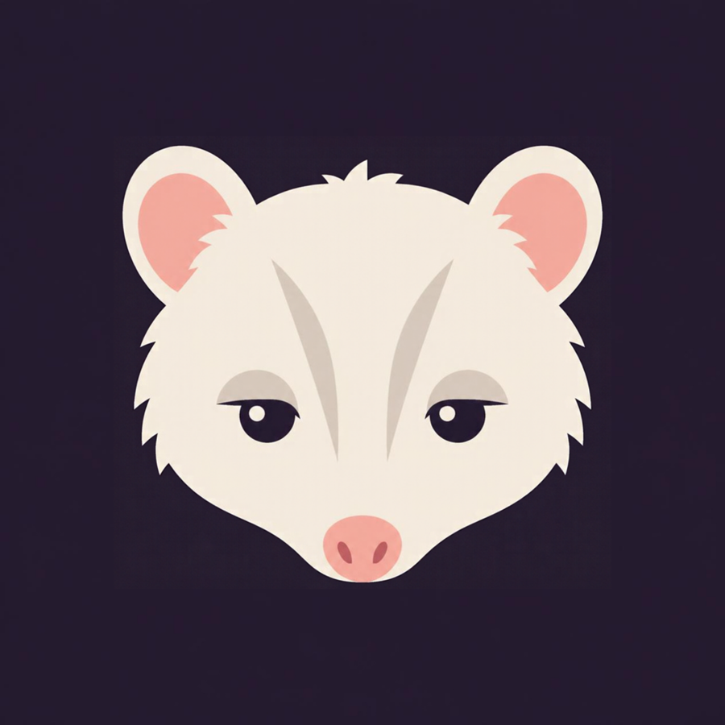
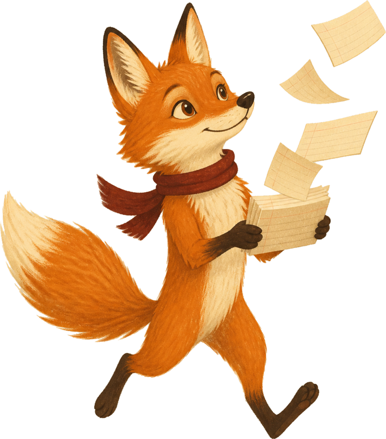
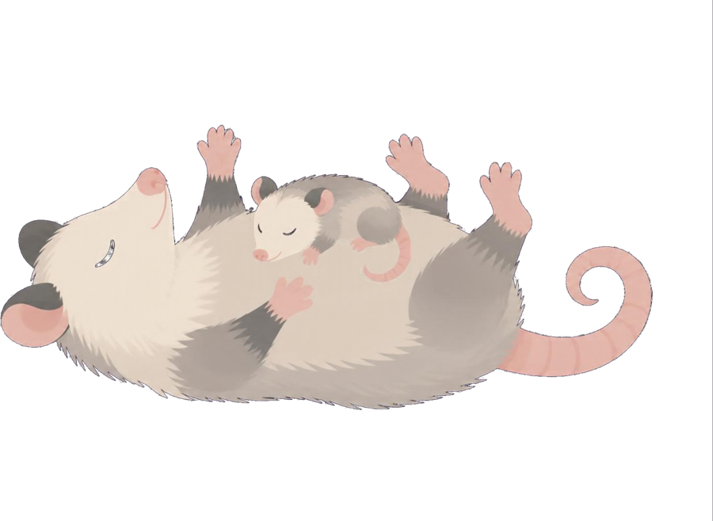
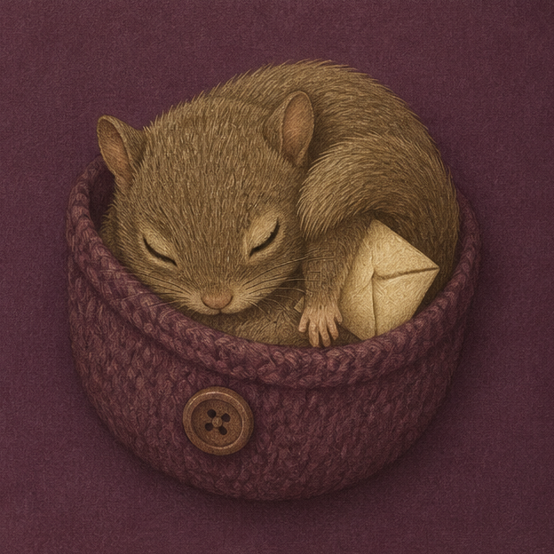

The kits
Five kits, each made for a different person in the house. They share the same seven parts and the same rules, so a household that owns one already knows how the next one works.

The Book Detective Agency
Live. $12. Sixteen letter pages. You supply a timer, a binder, and a hole punch.
Every book is a case, and every case gets a file. Ten minutes a day with a card the child draws, a sand timer the child turns, and a binder nobody else writes in. Rank rises with the number of files and is never taken away, which is why a child who erases more than she writes keeps coming back to it.
Open the Agency
The Hard Day Kit
Founding edition. $15. A phone page and two fridge sheets. Midnight Mom's Collective.
Open it at the hour that is going wrong, draw one card, and the decision is already made. The cards live on your phone and are organized by the hour, so the one for 5:40 is the one you find at 5:40. Two sheets go on the fridge, the household one and the rules, and on the back of every card, for anyone who wants it, sits the prompt that hands the rest to an AI.
Get the date
The Household Library
$27. One page for the phone, made for Hard Day Kit owners. Midnight Mom's Collective.
Fill in your household once, and thirty four prompts already know it. Meals, school nights, resets, and handoffs, each prompt copied with your household at the top, so that pasting it into any AI tool you already use is the whole task.
Get the date
The Seminar Kit
First edition. $19. One page for the phone.
Thirty situations from a term, the reading week, the seminar paper, and the conversation about disclosure, each with the deciding removed. Every card has a Done when line and a Too big button that cuts it to one step. Scripts for the disability office, a professor, an advisor, and a group project keep a log of who was told what, and a philosophy-of-use builder turns three questions into the paragraph a syllabus asks for. Nothing connects to Canvas, and nothing needs to.
Get the date
The Archive Kit
First edition. $19. One page for the phone, and every part works on paper.
Cards pair a unit of the work, a source, a claim, a section, or a submission, with the next thing to do to it, and a hard day counts if one sentence gets written. Sources are cached as they are found, so the draft goes back for them instead of forty open tabs. An editorial pass writes the instructions for any AI you already use, so it asks and proposes and never drafts your prose, and scripts for co-authors, editors, chairs, and funders keep a log of who was told what.
Get the dateThe animals
Every kit has one, and they are the animals that work at night and are not thanked for it. Each one stands for a rule the kit keeps.
The Agent gets into everything and files it.
A raccoon works at night, goes through whatever has been left out, and keeps what it finds. In the Book Detective Agency every case goes into a binder nobody corrects, and rank counts only the files in it, so a rank is never taken away.

When the possum plays dead, that is a rule, not a failure.
She is nocturnal, she carries every child at once, and when it is too much she lies down and gets up afterward. In the Hard Day Kit the one-dot card and the Fairness Clause are her on her back, and the kit says so on the page, so the household knows what it is looking at.
The fox reads everything at once, then sleeps on it.
She is alert and a little too fast, three readings open and the seminar at two. When the week is over she sleeps on the stack. The Seminar Kit is built for both halves of that week, the sprint and the rest after it.

The Archivist caches what she finds and glides back for it.
A southern flying squirrel, native to North Carolina and out only at night. She tucks away every good source, a quote here, a page number there, and returns when the draft needs one. In the Archive Kit the two counts, sessions and sources cached, never go down, and one sentence counts on a hard day. She also carries the mail.
How a kit is made
Seven parts, the same in every kit, so the second one you own works like the first. The studio is run by someone with ADHD, and the kits are built the way accommodation works when it works: the structure does the executive function so the person does not have to. The card removes the decision, the timer removes the stopping, the rule removes correction, and the count removes the question of whether today was good enough.
- Directions, and a page for whoever helps.The front is for the person using the kit, and the back is for whoever helps them, with the research in one paragraph.
- The working page.One sheet for one sitting, with a place to mark it done, printed in quantity.
- The rules and the fairness clause.Six rules to start with, four blank lines for the house to add its own, and a clause for hard days that the user writes and everyone in the house signs.
- Progress by count.It rises with the number of sessions, never with their quality, and it never goes down.
- The outside world.Scripts and addresses for whoever is outside the house, the partner, the school, the author, the friend, with a log of who was told what.
- The cards.Four colors for four kinds of task, dots for how much capacity a card assumes, and blanks for the ones the user writes.
- The research page.Each rule links to a study by DOI, or is marked as the studio's own untested belief. The studio's research page.
The storeroom
Everything the kits use that does not come in the PDF. Timers, binders, pans, fridge sheets, and the books behind the studio, each one chosen for a rating of 4.6 or higher with a large number of reviews, and grouped by the kit it belongs to.
Open the storeroomWho
One person, a writing professor in Raleigh with ADHD.
She teaches how people learn to write, has a six year old who reads anything and writes one word, and keeps a household in which Wednesday is harder than Tuesday. The kits are built the way she needs them built and tested there before anywhere else.
Every rule in a kit links to a study on the research page. The studio is independent of any institution.

The list
One email when a kit ships, and one when a free expansion is ready. There is no schedule, no sequence, and no welcome series.